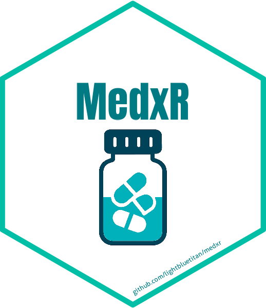
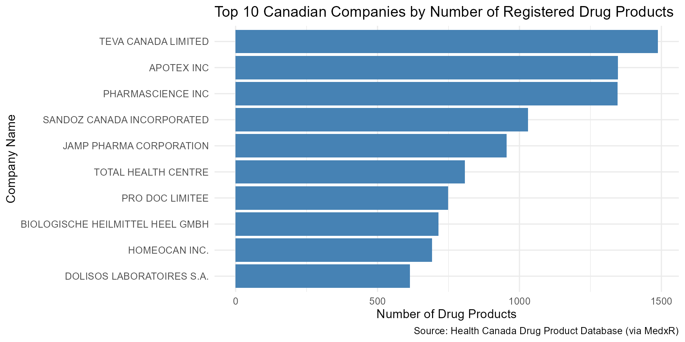

MedxR: Access Drug Regulatory Data via FDA and Health Canada APIs
Source:vignettes/MedxR_vignette.Rmd
MedxR_vignette.RmdIntroduction
The MedxR package provides a unified interface to access
open drug regulatory data from the U.S. Food and Drug
Administration (FDA) Open API and the Health Canada
Drug Product Database API. It allows users to retrieve
real-time or historical information about drug
approvals, adverse events, product
recalls, and pharmaceutical details, enabling
transparent and reproducible analysis of regulatory information across
North America.
In addition to API-access functions, the package includes a curated collection of open datasets related to drugs, pharmaceuticals, treatments, and clinical studies. These datasets encompass diverse topics such as, treatment dosages, pharmacological research, placebo effects, drug reactions, misuse of pain relievers, and vaccine effectiveness.
MedxR is designed to support researchers, educators, and
healthcare professionals by integrating international RESTful
APIs with structured datasets from
public, academic, and government sources into a single,
easy-to-use R package. It provides a comprehensive foundation for
pharmacological research, regulatory
analysis, and health data science.
Functions for MedxR
The MedxR package provides several core functions to
access real-time and structured information about drugs and
pharmaceutical products from public APIs such as the
FDA Open API and the Health Canada Drug Product
Database API.
These functions allow users to query, retrieve, and analyze regulatory data related to drug approvals, adverse events, product recalls, and drug shortages, ensuring reproducible and transparent access to official medical and regulatory information.
Below is a list of the main functions included in the package:
get_fda_adverse_events(): Search Adverse Events by Drug Name in FDA Adverse Event Reporting System, e.g.,get_fda_adverse_events("aspirin").get_fda_drug_labels(): Search Drug Labels by Drug Name in FDA Drug Labeling Database, e.g.,get_fda_drug_labels("aspirin").get_fda_drugs_approved(): Search FDA-Approved Drugs by Drug Name, e.g.,get_fda_drugs_approved("lipitor").get_fda_ndc_directory(): Search National Drug Code (NDC) Directory by Drug Name, e.g.,get_fda_ndc_directory("ibuprofen").get_hc_active_ingredients(): Get Active Ingredients from Health Canada Drug Product Database.get_hc_companies(): Get Companies from Health Canada Drug Product Database.get_hc_din(): Get All DINs from Health Canada Drug Product Database.get_hc_drug_by_din(): Get a Drug Product by DIN from Health Canada Drug Product Database, e.g.,get_hc_drug_by_din("00000213").get_hc_drug_products(): Retrieve Drug Products from Health Canada Drug Product Database.get_hc_forms(): Get Pharmaceutical Forms from Health Canada Drug Product Database.get_hc_search_drug(): Search Drug Products by Brand Name in Health Canada Drug Product Database, e.g.,get_hc_search_drug("NEMBUTAL").
These functions allow users to access high-quality and structured information on drugs and regulatory data, which can be seamlessly combined with tools like dplyr and ggplot2 to support a wide range of data analysis, visualization, and pharmacological research tasks.
In the following sections, you’ll find examples on how to work with
MedxR in practical scenarios, including retrieving data
from the FDA and Health Canada APIs,
as well as exploring and analyzing the curated datasets included in the
package.
Search Adverse Events by Drug Name in FDA Adverse Event Reporting System
aspirin_adverse_event <- get_fda_adverse_events("aspirin")
aspirin_adverse_event %>%
select(report_id, date_received, country, serious, patient_sex) %>%
head(6)
#> # A tibble: 6 × 5
#> report_id date_received country serious patient_sex
#> <chr> <date> <chr> <chr> <chr>
#> 1 10003304 2014-03-12 US No Female
#> 2 10003310 2014-03-12 US No Female
#> 3 10003321 2014-03-12 JP Yes Male
#> 4 10003349 2014-03-12 US Yes Female
#> 5 10003432 2014-03-12 US Yes Female
#> 6 10003582 2014-03-12 US No MaleSearch FDA-Approved Drugs by Drug Name
lipitor_drugs_approved <- get_fda_drugs_approved("lipitor")
lipitor_drugs_approved %>%
select(application_number, brand, generic, approval_date, strength, form)
#> # A tibble: 4 × 6
#> application_number brand generic approval_date strength form
#> <chr> <chr> <chr> <date> <chr> <chr>
#> 1 NDA020702 LIPITOR ATORVASTATIN CALCIUM 1996-12-17 EQ 80MG BASE TABLET
#> 2 NDA020702 LIPITOR ATORVASTATIN CALCIUM 1996-12-17 EQ 20MG BASE TABLET
#> 3 NDA020702 LIPITOR ATORVASTATIN CALCIUM 1996-12-17 EQ 40MG BASE TABLET
#> 4 NDA020702 LIPITOR ATORVASTATIN CALCIUM 1996-12-17 EQ 10MG BASE TABLETGet a Drug Product by DIN from Health Canada Drug Product Database
hc_drug_din <- get_hc_drug_by_din("00000213")
hc_drug_din %>%
select(drug_code, class_name, din, brand_name, company_name)
#> # A tibble: 1 × 5
#> drug_code class_name din brand_name company_name
#> <int> <chr> <chr> <chr> <chr>
#> 1 2576 Human 00000213 NEMBUTAL SODIUM INJ 50MG/ML ABBOTT LABORATORIES, LIMITEDTop 10 Canadian Companies by Number of Registered Drug Products
# Retrieve data from Health Canada APIs
drug_products <- get_hc_drug_products()
companies <- get_hc_companies()
# Combine both datasets by company name
merged_data <- drug_products %>%
left_join(companies, by = "company_name") %>%
filter(!is.na(company_name)) %>%
group_by(company_name) %>%
summarise(total_products = n()) %>%
arrange(desc(total_products)) %>%
slice_head(n = 10)
# Plot: Top 10 companies by number of registered drug products
ggplot(merged_data, aes(x = reorder(company_name, total_products), y = total_products)) +
geom_col(fill = "steelblue") +
coord_flip() +
labs(
title = "Top 10 Canadian Companies by Number of Registered Drug Products",
x = "Company Name",
y = "Number of Drug Products",
caption = "Source: Health Canada Drug Product Database (via MedxR)"
) +
theme_minimal(base_size = 13)
Dataset Suffixes
Each dataset in MedxR is labeled with a suffix
to indicate its structure and type:
_df: A standard data frame._tbl_df: A tibble data frame object._list: A list object._matrix: A matrix object.
Datasets Included in MedxR
In addition to API access functions, MedxR offers a
curated collection of open datasets focused on drugs, pharmaceuticals,
treatments, and clinical studies. These datasets cover diverse topics
such as treatment dosages, pharmacological studies, placebo effects,
drug reactions, misuses of pain relievers, and vaccine effectiveness.
Below are some featured examples:
aspirin_infarction_df: A data frame containing results from a meta-analysis on the use of aspirin to prevent death after myocardial infarction.
drug_prices_tbl_df: A tibble containing information on unit prices for various pharmaceutical products. Each record includes a description, currency, cost per unit, unit type, and a parent key identifier.
placebos_df: A data frame containing pain relief data from both analgesics and placebos.
Conclusion
The MedxR package provides a unified interface for
accessing real-time drug regulatory data from public APIs and a
comprehensive collection of curated pharmaceutical datasets. Offering
seamless integration with both the FDA Open API and
Health Canada Drug Product Database API, it enables
retrieval of critical information on drug approvals, adverse events,
recalls, and product details.
The package serves as an essential resource for researchers, healthcare professionals, and educators in pharmacology, medicine, and healthcare, facilitating evidence-based decision making and reproducible research through reliable international data sources and structured datasets from public, academic, and government repositories.